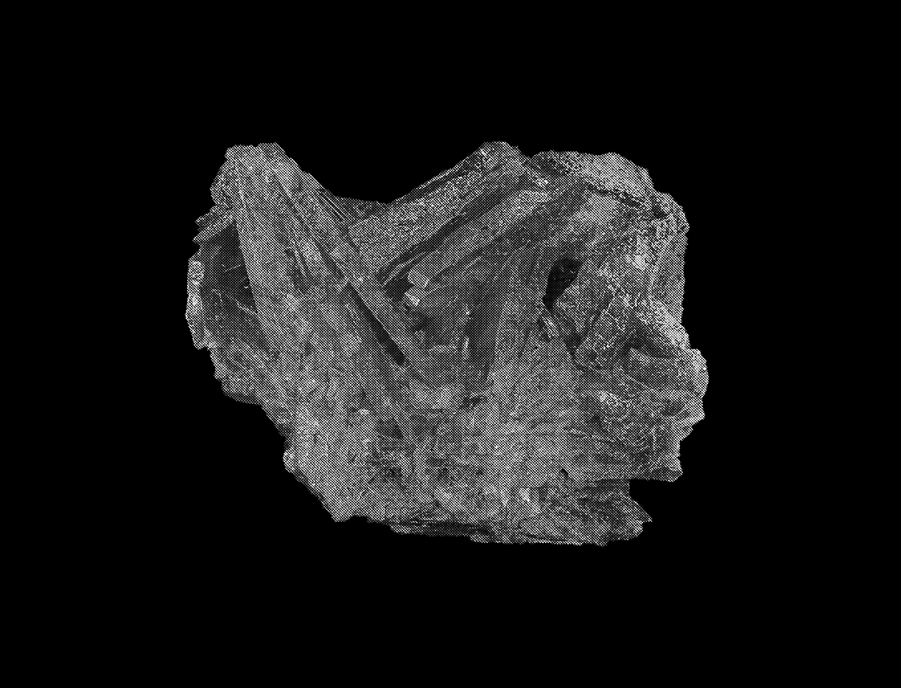
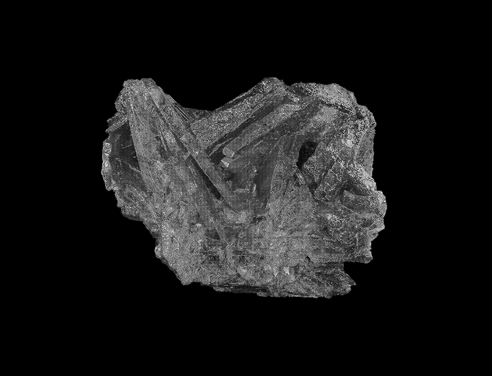

... As far as I know, there is no definition of the auteur theory in the English language, that is, by any American or British critic. Truffaut has recently gone to great pains to emphasise that the auteur theory was merely a polemical weapon for a given time and a given place 10 , and I am willing to take him at his word. But, lest I be accused of misappropriating a theory no one wants anymore, I will give the Cahiers critics full credit for the original formulation of an idea that reshaped my thinking on the cinema.
First of all, how does the auteur theory differ from a straightforward theory of directors. Ian Cameron's article "Films, Directors, and Critics," in Movie of September, 1962 11 , makes an interesting comment on this issue: "The assumption that under lies all the writing in Movie is that the director is the author of a film, the person who gives it any distinctive quality. There are quite large exceptions, with which I shall deal later." So far, so good, at least for the auteur theory, which even allows for exceptions. However, Cameron continues: "On the whole, we accept the cinema of directors, although without going to the farthest-out extremes of the la politique des auteurs, which makes it difficult to think of a bad director making a good film and almost impossible to think of a good director making a bad one." We are back to Bazin again, although Cameron naturally uses different examples. That three other wise divergent critics like Bazin, Roud, and Cameron make essentially the same point about the auteur theory suggests a common fear of its abuses. I believe there is a misunderstanding here about what the auteur theory actually claims, particularly since the theory itself is so vague at the present time.
I believe there is a misunderstanding here about what the auteur theory actually claims, particularly since the theory itself is so vague at the present time.
First of all, the auteur theory, at least as l understand it and now intend to express it, claims neither the gift of prophecy nor the option of extracinematic perception. Directors, even auteurs, do not always run true to form, and the critic can never assume that a bad director will always make a bad film. No, not always, but almost always, and that is the point. What is a bad director, but a director who has made many bad films?

fig 5. Auteur theory is not prophetic
Auteur theory, at least as l understand it and now intend to express it, claims neither the gift of prophecy nor the option of extracinematic perception
What is the problem then? Simply this: The badness of a director is not necessarily considered the badness of a film. If Joseph Pevney directed Garbo, Cherkassov, Olivier, Belmondo, and Harriet Andersson in The Cherry Orchard 12 , the resulting spectacle might not be entirely devoid of merit with so many subsidiary auteurs to cover up for Joe. In fact, with this cast and this literary property, a Lumet might be safer than a Welles. The realities of casting apply to directors as well as to actors, but the auteur theory would demand the gamble with Welles, if he were willing.
Marlon Brando has shown us that a film can be made without a director. Indeed, One-Eyed Jacks 13 is more entertaining than many films with directors. A director conscious critic would find it difficult to say anything good or bad about direction that is nonexistent. One can talk here about photography, editing, acting, but not direction. The film even has personality, but like The Longest Day 14 and Mutiny on the Bounty 15 , it is a cipher directorially. Obviously, the auteur theory cannot possibly cover every vagrant charm of the cinema. Nevertheless, the first premise of the auteur theory is the technical competence of a director as a criterion of value. A badly directed or an undirected film has no importance in a critical scale of values, but one can make interesting conversation about the subject, the script, the acting, the color, the photography, the editing, the music, the costumes, the decor, and so forth. That is the nature of the medium. You always get more for your money than mere art. Now, by the auteur theory, if a director has no technical competence, no elementary flair for the cinema, he is automatically cast out from the pantheon of directors. A great director has to be at least a good director. This is true in any art. What constitutes directorial talent is more difficult to define abstractly. There is less disagreement, however, on this first level of the auteur theory than there will be later.
fig 6. badly directed or an undirected film has no importance in a critical scale of values, but one can make interesting conversation about the subject, ... and so forth.
The second premise of the auteur theory is the distinguishable personality of the director as a criterion of value. Over a group of films, a director must exhibit certain recurrent characteristics of style, which serve as his signature. The way a film looks and moves should have some relationship to the way a director thinks and feels. This is an area where American directors are generally superior to foreign directors. Because so much of the American cinema is commissioned, a director is forced to express his personality through the visual treatment of material rather than through the literary content of the material. A Cukor, who works with all sorts of projects, has a more developed abstract style 16 than a Bergman, who is free to develop his own scripts. 17 Bergman, who is free to develop his own scripts. Not that Bergman lacks personality, but his work has declined with the depletion of his ideas largely because his technique never equaled his sensibility. Joseph L. Mankiewicz 18 and Billy Wilder 19 are other examples of writer-directors without adequate technical mastery. By contrast, Douglas Sirk 20 and Otto Preminger 21 have moved up the scale because their miscellaneous projects reveal a stylistic consistency.
fig 7. The second premise of the auteur theory is the distinguishable personality of the director as a criterion of value.
The third and ultimate premise of the auteur theory is concerned with interior meaning, the ultimate glory of the cinema as an art. Interior meaning is extrapolated from the tension between a director's personality and his material. This conception of interior meaning comes close to what Astruc defines as mise en scene, but not quite. It is not quite the vision of the world a director projects nor quite his attitude toward life. It is ambiguous, in any literary sense, because part of it is imbedded in the stuff of the cinema and cannot be rendered in non cinematic terms. Truffaut has called it the temperature of the director on the set, and that is a close approximation of its professional aspect. 22 Dare I come out and say what I think it to be is an elan of the soul? Lest I seem unduly mystical, let me hasten to add that all I mean by "soul" is that intangible difference between one personality and another, all other things being equal. Sometimes, this difference is expressed by no more than a beat's hesitation in the rhythm of a film.
In one sequence of La Règle du jeu, Renoir gallops up the stairs, turns to his right with a lurching movement, stops in hop like uncertainty when his name is called by a coquettish maid, and, then, with marvellous post reflex continuity, resumes his bearishly shambling journey to the heroine's boudoir. 23 If I could describe the musical grace note of that momentary suspension, and I can't, one might be able to provide a more precise definition of the auteur theory. As it is, all I can do is point at the specific beauties of interior meaning on the screen and, later, catalogue the moments of recognition.
fig 8. Interior meaning is extrapolated from the tension between a director's personality and his material
✳ ✳ ✳
The three premises of the auteur theory may be visualized as three concentric circles: the outer circle as technique; the middle circle, personal style; and the inner circle, interior meaning. The corresponding roles of the director may be designated as those of a technician, a stylist, and an auteur. There is no prescribed course by which a director passes through the three circles. Godard once remarked that Visconti had evolved from a metteur en scene to an auteur, where as Rossellini had evolved from an auteur to a metteur en scene. 24 From opposite directions, they emerged with comparable status. Minnelli began and remained in the second circle as a stylist; Bufiuel was an auteur even before he had assembled the technique of the first circle. Technique is simply the ability to put a film together with some clarity and coherence. Nowadays, it is possible to become a director without knowing too much about the technical side, even the crucial functions of photography and editing. An expert production crew could probably cover up for a chimpanzee in the director's chair. How do you tell the genuine director from the chimpanzee? After a given number of films, a pattern is established.
How do you tell the genuine director from the chimpanzee? After a given number of films, a pattern is established.
In fact, the auteur theory itself is a pattern theory in constant flux. I would never endorse a Ptolemaic constellation of directors in a fixed orbit. At the moment, my list of auteurs runs something like this through the first twenty: Ophuls, Renoir, Mizoguchi, Hitchcock, Chaplin, Ford, Welles, Dreyer, Rossellini, Murnau, Griffith, Sternberg, Eisenstein, von Stroheim, Bufiuel, Bresson, Hawks, Lang, Flaherty, Vigo. This list is somewhat weighted toward seniority and established reputations. In time, some of these auteurs will rise, some will fall, and some will be displaced either by new directors or rediscovered ancients. Again, the exact order is less important than the specific definitions of these and as many as two hundred other potential auteurs. I would hardly expect any other critic in the world fully to endorse this list, especially on faith. Only after thousands of films have been revaluated, will any personal pantheon have a reasonably objective validity. The task of validating the auteur theory is an enormous one, and the end will never be in sight. Meanwhile, the auteur habit of collecting random films in directorial bundles will serve posterity with at least attentative classification.
Although the auteur theory emphasizes the body of a director's work rather than isolated masterpieces, it is expected of great directors that they make great films every so often. The only possible exception to this rule I can think of is Abel Gance, whose greatness is largely a function of his aspiration. 25 Even with Gance, La Roue’s as close to being a great film as any single work of Flaherty. 26 Not that single works matter that much. As Renoir has observed, a director spends his life on variations of the same film.
 


fig 9. Directors continue to develop and refine variations of the same film.
Two recent films- Boccaccio '70 27 and The Seven Deadly Sins 28 -unwittingly reinforced the auteur theory by confirming the relative standing of the many directors involved. If I had not seen either film, I would have anticipated that the order of merit in Boccaccio '70 would be Visconti, Fellini, and De Sica, and in The Seven Capital Sins Godard, Chabrol, Demy, Vadim, De Broca, Molinaro. (Dhomme, Ionesco's stage director and an unknown quantity in advance:, turned out to be the worst of the lot.) There might be some argument about the relative badness of De Broca and Molinaro, but, otherwise, the directors ran true to form by almost any objective criterion of value. However, the main point here is that even in these frothy, ultra commercial servings of entertainment, the contribution of each director had less in common stylistically with the work of other directors on the project than with his own previous work.
Sometimes, a great deal of com must be husked to yield a few kernels of material meaning. I recently saw Every Night at Eight 29 , one of the many maddeningly routine films Raoul Walsh has directed in his long career. This 1935 effort featured George Raft, Alice Faye, Frances Langford, and Patsy Kelly in one of those familiar plots about radio shows of the period. The film keeps moving along in the pleasantly unpretentious manner one would expect of Walsh until one incongruously intense scene with George Raft thrashing about in his sleep, revealing his inner feelings in mumbling dream-talk. The girl he loves comes into the room in the midst of his unconscious avowals of feeling and listens sympathetically. This unusual scene is later amplified in High Sierra with Humphrey Bogart and Ida Lupino 30 . The points is that one of the screen's most virile directors employed an essentially feminine narrative device to dramatise the emotional vulnerability of his heroes. If I had not been aware of Walsh in Every Night at Eight, the crucial link to High Sierra would have passed unnoticed. Such are the joys of the auteur theory.
Published in 1962